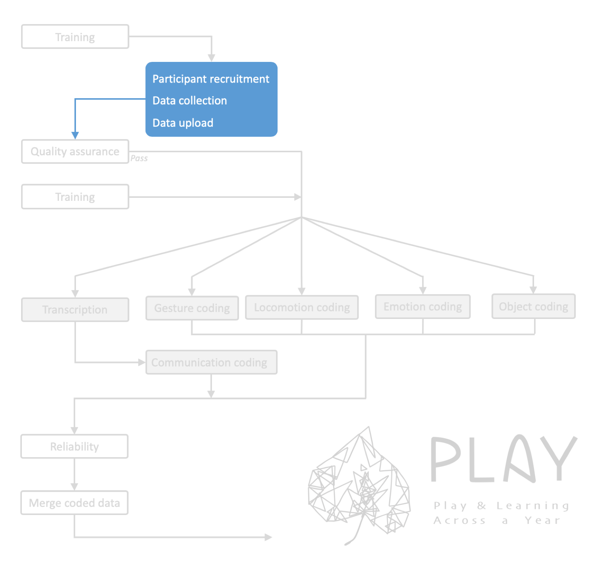
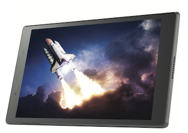
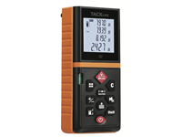
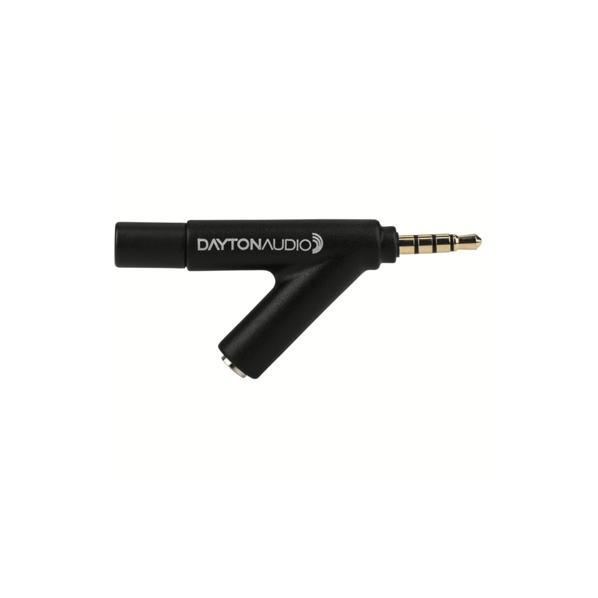
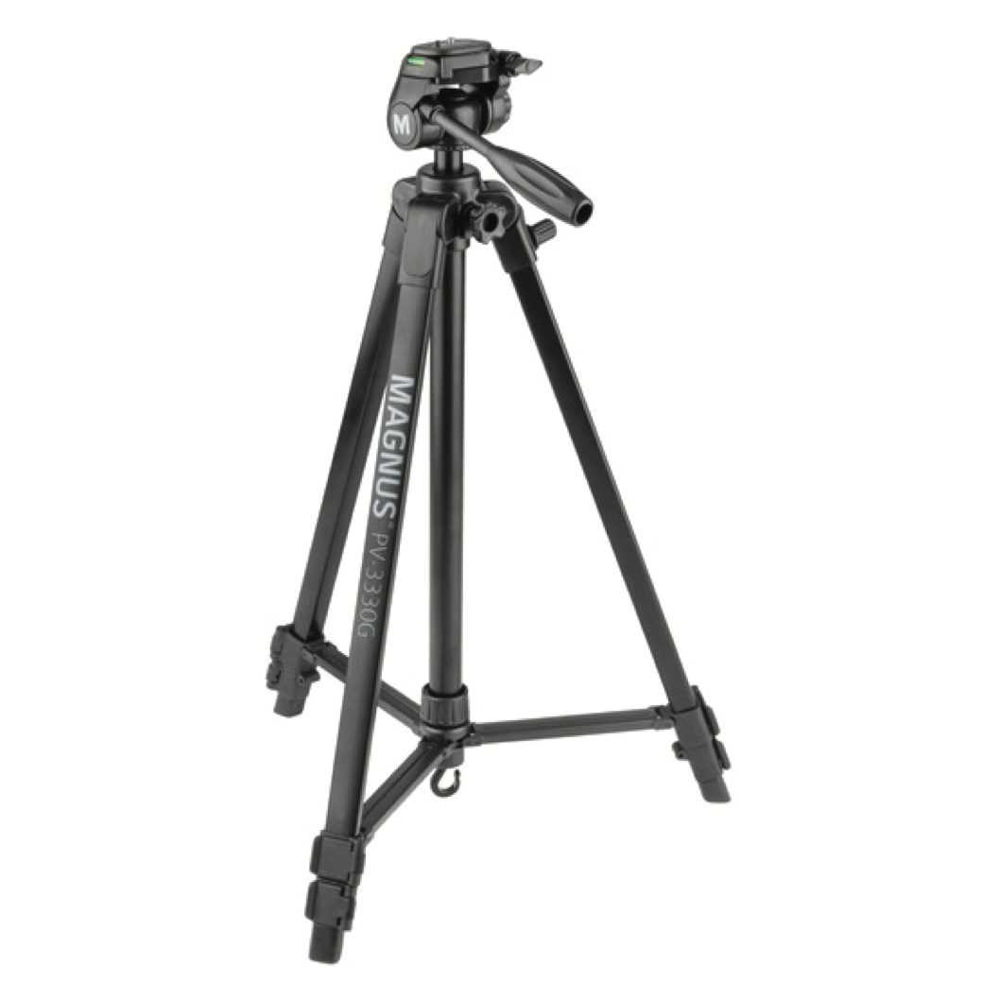
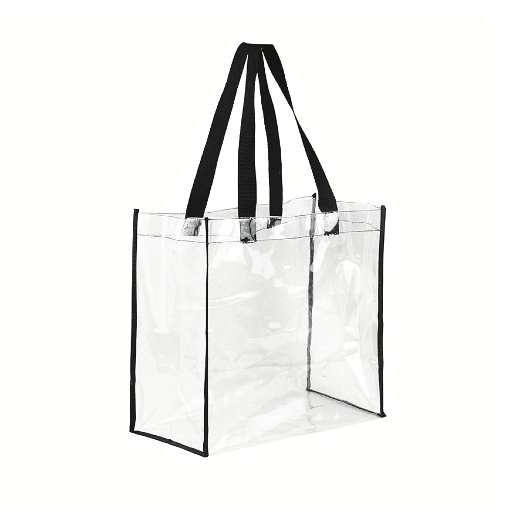
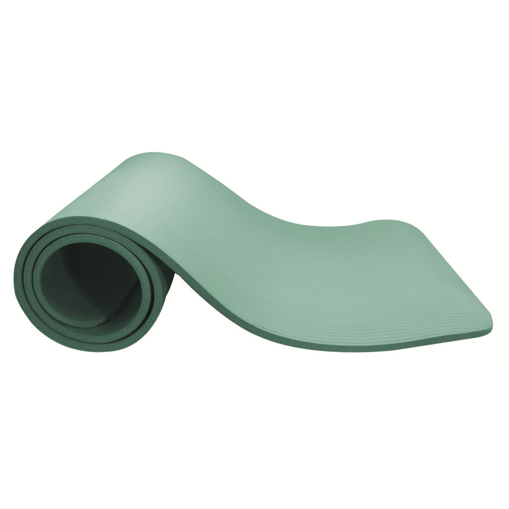
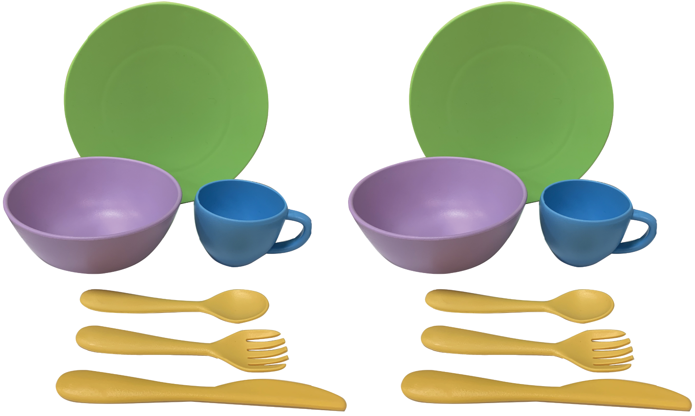
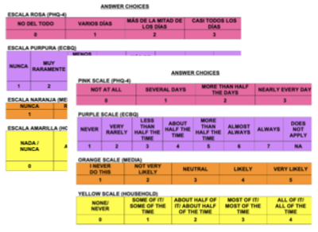
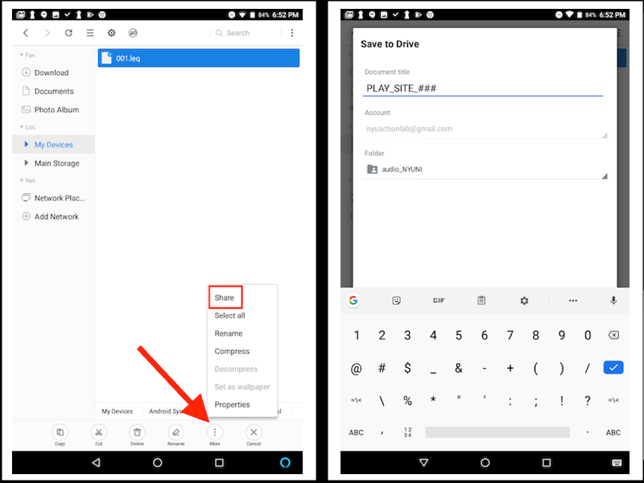

PLAY & Learning Across a Year
Collection overview
The collaborating sites in PLAY perform a variety of roles (see people for details). Each site that performs a collecting role is pre-assigned to complete all of the collecting functions (see in blue below). This page contains detailed help for the data collection and upload process. Click here for information about participant recruitment .

All videos that are collected with go through a quality assurance
process in which the PLAY team will ensure that the videos are eligible
to be included in the final sample. Videos that pass QA will then be
passed on for coding. Videos that don’t pass QA will be (depending on
why they didn’t) reused for other purposes or will be sent back to the
collection site for modification. In some cases, the collection site
might be provided additional training.
Participant Recruitment
There is a parent-oriented website at anhourinthelife.org (also see Spanish version) where parents can find more information about the project and sign up to participate. PLAY staff will transmit interested parents’ information to the appropriate site.
1. Scheduling visit
To schedule a visit, you will be making two phone calls to each family: the initial recruiting call and the confirmation call (if the family agrees to participate). Depending on the availability of the mother, you will complete the Demographic Questionnaire
1.1 Initial recruiting phone call
English instructions
(See video at the end of the script)
- → If not ENGLISH or SPANISH: end call.
To control for differences in communication, we are looking for families who speak mainly English or Spanish. Would it be alright if we contacted you for other studies in the future? - → If mainly English/Spanish: continue
- → If more than 4 weeks early: end call.
In this study, we are currently looking for children born on term. Would it be alright if we contacted you for other studies in the future? - → If born on term (36-41 weeks): continue
- → If yes: end call.
In this study, we are looking for typically developing children. Would it be alright if we contacted you for other studies in the future? - → If no: continue
- → If no to study or to sharing video on Databrary: end
call
Okay, thank you. May we call you for other studies? - → If yes: continue
- → If the date they are available puts child out of age range:
end call
For this study, we are interested in studying specific age groups: 12-, 18-, and 24-month olds. Would it be possible for us to contact you in XX months to see if [CHILD] can participate then? - → If dates are available when child is still within eligible age range: continue
- → If ready to answer now, continue (see video for Demographics
Questionnaire below this list):
- On your tablet, open Kobo toolbox and start a new questionnaire set
- Fill out participant information at top of new session
- “Save as Draft” after demographic questionnaire and home visit questionnaires
- Only hit “Submit” after filling out clean-up notes back in lab
- Here are links to view the demographic questionnaire


- Please note that presentation and format will differ in the app.
- → If not available now
When will be a good time to call back about the questions? - If another time work, schedule a 10- to 15-minute call to complete demographic questionnaire
- If difficult to find a time up to 2 days before visit, complete demographic questionnaire when confirming visit


Spanish instructions
(Ver video al final del guión)
- → Si no es INGLES o ESPAÑOL finalice la llamada.
Para controlar diferencias de comunicación, estamos buscando familias que hablen primariamente inglés o español. ¿Estaría bien si les contactamos para otros estudios más adelante? - → Si hablan principalmente inglés/español : continúe
- → Si nació más de 4 semanas antes: finalice la llamada.
Actualmente para este estudio estamos buscando a niños que hayan nacido de termino. ¿Estaría bien si les contactamos para otros estudios más adelante? - → Si nació de termino (37-41 semanas): continúe
- → En caso de si: finalice la llamada.
Actualmente para este estudio estamos buscando a niños con desarrollo típico. ¿Estaría bien si les contactamos para otros estudios más adelante? - → En caso de no: continúe
- → En caso de no querer participar en el estudio o estar dispuesto a
compartir los videos en Databrary: finalice la llamada.
Bueno, gracias. ¿Podemos contactarles para otros estudios? - → En caso de si: continúe.
- → En caso de si: finalice la llamada.
Actualmente, solo estamos reclutando familias que están de acuerdo con no usar una mascarilla. Pero, ¿está bien si lo llamamos para otros estudios? - → En caso de no: continúe
- → Si en la fecha en la cual están disponibles el bebé ya esta fuera
de el rango de edad:
Para este estudio estamos interesados en estudiar grupos de edad específicas: 12-, 18, y 24- meses. ¿Estaría bien si les contactamos en XX meses para ver si [NIÑO] puede participar entonces? - → Si el niño esta en el rango de edad para la fecha en la cual están disponibles: continúe
- → En caso de que madre pueda responder las preguntas ahora, continúe
(see video for Demographics Questionnaire below this list):
- Abra un nuevo cuestionario en Kobo toolbox en el Tablet.
- Rellene la información del participante en una nueva sesión.
- Luego de completar el cuestionario demográfico guarde como “sabe as draft”.
- Solo oprima “submit” al completar todas las notas luego de la visita.
- Lista de preguntas del cuestionario demográfico
- Por favor tenga presente que el formato será distinto que en la aplicación.
- → En caso de que madre no pueda responder las preguntas en este
momento,
Cuando seria un buen momento para llamarla nuevamente cuando usted tenga tiempo para responder estas preguntas? - Si puede en otro momento, programe una llamada de 10- a 15-minutos para completar el cuestionario demográfico.
- Si es difícil coordinar una llamada, complete el cuestionario al llamar para confirmar la visita.


1.2 Initial recruiting voicemail
If you reach the family’s voicemail, please leave the following message:
English script

Spanish script

1.3 Initial recruiting email
If you will be contacting the family over email, you may use the following template:
English template
Dear [MOM],
I am writing from the [LAB] to tell you about a fun study that [CHILD] would be perfect for!
For this study, we are interested in learning about babies' natural, everyday experiences in their homes — such as the toys they play with and the places they go. A researcher will visit you and [CHILD] in your home, and the two of you will be video recorded as you go about your day. The visit lasts about 2-3 hours, and you will receive a $50 gift card at the end of the session.
We will not physically interact with you or your child, this study is just observational. Anything we bring into your home will be sanitized.
If you are interested in participating, would like more information, or have any questions, feel free to contact us by email or phone. Our phone number is [XXX-XXX-XXXX]. You can learn more about the study at anhourinthelife.org. We look forward to hearing from you soon!
Thank you,
[LAB]Spanish template
Estimada [MAMÁ],
Le estamos escribiendo desde [LAB] para contarle sobre un estudio de investigación que sería ideal para [NIÑO].
Para este estudio, estamos interesados en conocer las experiencias cotidianas y naturales de los niños en sus hogares – los juguetes con los que juegan y los lugares a los que van en su hogar. Un investigador lo visitará a usted y a [NIÑO] en su hogar, y ustedes serán filmados mientras realizan sus actividades diarias. Cada visita dura aproximadamente 2-3 horas, y usted recibirá una tarjeta de regalo de $50 por su participación.
No interactuaremos físicamente con usted o con su hijo/a, este estudio es solo observacional. Todo lo que llevemos a su hogar será desinfectado.
Si usted está interesada en participar, desea más información o tiene alguna pregunta, no dude en contactarnos por correo electrónico o por teléfono. Nuestro número [XXX-XXX-XXXX]. ou can learn more about the study at anhourinthelife.org/index-spanish.html. ¡Esperamos tener noticias de usted pronto!
Gracias,
[LAB]2. Establishing visit details
Once you have connected with the family and decided on a visit date, please send the following email to establish the visit details:
English template
Dear [MOM],
Thank you very much for agreeing to participate in our home visit study with [CHILD]. Here is a confirmation of the date and time of your appointment:
*Date: [DAY OF WEEK], [DATE]
*Time: [START TIME] – [END TIME]
Your Home Address: [ADDRESS]
We look forward to seeing you on the day of your appointment! If the above address is incorrect, please email back or call us right away. If you have any other questions about this appointment, feel free to contact us at [XXX-XXX-XXXX].
Thank you,
[LAB]Spanish template
Estimada [MAMÁ],
Muchas gracias por acceder a participar en nuestro estudio con [NIÑO]. Esta es la confirmación de fecha y hora de nuestra visita:
*Fecha: [DIA DE LA SEMANA], [FECHA]
*Hora: [HORA DE COMIENZO] - [HORA DE TÉRMINO]
Dirección: [DIRECCIÓN]
Esperamos verlo el día de su cita. Si la dirección anterior es incorrecta, por favor envíe un correo electrónico o llámenos de inmediato. Si tiene alguna otra pregunta sobre esta cita, no dude en comunicarse con nosotros al [XXX-XXX-XXX].
Gracias,
[LAB]3. Confirming a visit (day before the visit)
3.1 Confirmation phone call
English instructions
- → If yes: end call
Currently, we are only enrolling families who are symptom-free and had no interaction with anyone COVID positive. But is it okay, if we call you for this study again in a few months? - → If no: continue
- → If yes:
- → If demographic questionnaire was not completed during initial
phone call:
That’s great! Before the visit, I’d like to ask you a few questions. It will only take 10-15 minutes of your time. - On your tablet, open Kobo toolbox and start a new questionnaire set
- Fill out participant information at top of new session
- “Save as Draft” after demographic questionnaire and home visit questionnaires
- Only hit “Submit” after filling out clean-up notes back in lab
- Here are links to view the demographic questionnaire
- Please note that presentation and format will differ in the app.
- Wrap up the call -
I will see you [date/time]. Just as a reminder, the data we collect from you now and during the visit, will be shared on a web-based library only available to researchers like the professor who runs this lab.
- → If demographic questionnaire has been completed: -
That’s great! I will see you [date/time]. Just as a reminder, the data we collect from you now and during the visit, will be shared on a web-based library only available to researchers like the professor who runs this lab.
- → If demographic questionnaire was not completed during initial
phone call:
- → If no: reschedule, make sure that child will still be within age range


Spanish instructions
- → En caso de si: finalice la llamada.
Actualmente, solo estamos inscribiendo familias que no tienen síntomas y no han tenido interacción con nadie con COVID positivo. Pero, ¿está bien si lo volvemos a llamar para este estudio en unos meses más? - → En caso de no: continúe
- → En caso de si:
- → Si el cuestionario demográfico no fue completado en la llamada
inicial:
¡Excelente! Antes de la visita nos gustaría hacerle algunas preguntas. Esto solo tomara 10-15 minutos. - En el Tablet o computadora, abra un nuevo cuestionario demográfico en Kobo toolbox.
- Lista de preguntas del cuestionario demográfico
- Al finalizar –
Entonces nos vemos el [FECHA] a las [HORA]. Solo como recordatorio, los datos recolectados en nuestra visita serán compartidos en una biblioteca on-line donde sólo tienen acceso los investigadores autorizados como el profesor que dirige este laboratorio.
- → Si el cuestionario demográfico ha sido completado en la llamada
inicial:
¡Excelente! Entonces nos vemos el [FECHA] a las [HORA]. Solo como recordatorio, los datos recolectados en nuestra visita serán compartidos en una biblioteca on-line donde solo tienen acceso los investigadores autorizados como el profesor que dirige este laboratorio.
- → Si el cuestionario demográfico no fue completado en la llamada
inicial:
- → En caso de no: Re-agendar la visita para otro día. Asegúrese que el niño estará dentro de la edad de inclusión para el estudio.


3.2 Confirmation voicemail
If you reach the family’s voicemail, please leave the following message:
English script

Spanish script

3.3 Confirmation email
If you have the family’s email address, it is always advisable to send a confirmation email. You may use the following templates:
English template
Dear [MOM],
Thank you very much for agreeing to participate in our home study with [CHILD]. Please let us know if this appointment still works for you! Here is a confirmation of the time and date of your appointment:
Date: [DAY OF WEEK], [DATE]
Time: [START TIME] – [END TIME]
Your Home Address: [ADDRESS]
We look forward to seeing you tomorrow! Please let us know if this appointment still works for you. If the above address is incorrect, please email or call us back right away. If you have any other questions about this appointment, feel free to contact us at [XXX-XXX-XXXX].
Thank you,
[LAB]Spanish template
Estimada [MAMÁ],
Muchas gracias por acceder a participar en nuestro estudio con [NIÑO]. Por favor le solicitamos nos confirme si aun esta disponible para nuestra visita. Esta es la confirmación de fecha y hora de nuestra visita:
*Fecha: [DIA DE LA SEMANA], [FECHA]
*Hora: [HORA DE COMIENZO] - [HORA DE TÉRMINO]
Dirección: [DIRECCIÓN]
¡Esperamos verlo mañana! Por favor le solicitamos nos confirme si aun esta disponible para nuestra visita. Si la dirección anterior es incorrecta, por favor envíe un correo electrónico o llámenos de inmediato. Si tiene alguna otra pregunta sobre esta cita, no dude en comunicarse con nosotros al [XXX-XXX-XXX].
Gracias,
[LAB]Preparing for Visit
1. Equipment & Materials
|
Camera ⓘ Panasonic HC-V770 Full HD Video Camera Camcorder SD Card ⓘ SanDisk 64GB Extreme PRO UHS-I SDXC Memory Card Extra battery ⓘ Panasonic Battery and Charger Kit (for HC-V77 Camcorders) |
||||
|
Fully loaded and charged tablet ⓘ Lenovo 8 Tab 4 8 16GB Tablet (Wi-Fi Only) Tablet case ⓘ MoKo Lenovo Tab 4 8” Case |
 |
Laser Measure ⓘ Tacklilfe S2 Advanced Laser Measure |
 | |
|
Decibel meter mic ⓘ Dayton Audio iMM-6 Microphone |
 |
Tripod ⓘ Magnus PV-3330G Photo/Video Tripod |
 | |
|
Tote bag ⓘ Clear Tote Bag (12”X 12”X 6”) |
 |
Yoga mat ⓘ Gaiam Essentials Thick Yoga Mat |
 | |
|
Dish set ⓘ Green Toys Dish Set |
 |
Toy ⓘ Munchkin Bath Bobbers |

|
2 copies of study consent forms - one for parent, one signed copy for lab records ⓘ Please contact lab PI to get your lab-specific copy of this form |

|
2 copies of Databrary permission forms - one for parent, one signed copy for lab records ⓘ Please contact lab PI to get your lab-specific copy of this form |
|
| Answer scales in English & Spanish |  | Paper backups of all questionnaires and forms |

|
2. Prepare to be in the home
- Take your own water with you. For the duration of the visit, you will decline any offerings of food or drink.
- Take your university ID with you, be prepared to show it if
asked.
- Dress plainly, modestly, neutrally. Nothing too bright and attractive to children. Try not to wear all black either :)
- Avoid strong perfumes and noisy jewelry. The idea is to blend into the background as much as possible.
- Be prepared to plan your bathroom breaks around the visit (it will be approx 2.5 hrs long).
2.1 Setup for Home Questionnaires
- Pack paper copies of
-Parent answer scales in English and/or Spanish
-Vocabulary list for parents, for the appropriate questionnaire version
-The appropriate home questionnaire as backup - While connected to internet in the lab, load the appropriate
questionnare on the tablet in KoBoToolbox (see documentation PDF
)
3. COVID Considerations
At each home visit, researchers abide by the following protections:
- Clean any equipment that is placed on a home surface (decibel meter, tablet) with a sanitizing wipe.
- Have only mothers open closets, cabinets, and doors during the house walk-through
- Hand toys for structured play to parents in a sanitized plastic tote bag
- Explain to mothers the research importance of not wearing a mask——to allow observation and coding of facial expressions
After each home visit, researchers will sanitize all toys, the camera, tripod, microphones, tablet, and all bags.
Home Visit
Now that you have set your target participant sample and completed
all the steps listed in the recruitment process, these
instructions will help you prepare for your participant home visit.
Please ensure that you are currently logged in at Databrary to view protected content in this webpage. For confidentiality reasons, access to video exemplars is restricted to researchers with authorized access to Databrary. To register for access, visit http://databrary.org/register.
At the end of every home visit (for each participant), you will upload the following:
- exactly 4 videos (to your Databrary repository)
- One-hour naturalistic play (include: decibel measure, shoes if child is wearing them in the house)
- House walk-through (include: measurements of each room, sleeping arrangements, clothing, books, toys, shoes if child is barefoot)
- 5-min structured play (focus on child and mom, even if they leave mat area)
- Questionnaires (set up camera on tripod, focus on mom) - exactly 1 decibel meter file (to your Databrary repository)
- exactly 3 questionnaire files (through the KoBo
Toolbox app)
- demographics questionnaire
- home visit questionnaire
- post-visit notes
1. Arrival introduction
Note: Experimenters should always act in a professional and respectful manner when interacting with the participants and while in the home. Do not make comments or react to anything in front of the mom to make her feel uncomfortable. All families should feel that their participation in the study is meaningful.
Say:
- Ask if you should take your shoes off.
- Ask for good place (i.e. out of child’s reach) to put backpack and coat.
- Do not leave the tripod and other equipment lying around.
- Do not engage or warm up to the baby. Just need to make mom feel comfortable.
2. Consent to participate
Experimenter should explain the study and ask mom to sign the consent.
Say:

3. One-hour natural play video & noise measurement
3.1 Decibel Meter
Say:
- Set up tablet, put in microphone.
- Ensure that “Audio Tool” is force closed.
- Place device in the most central place in the home (e.g., living room).
- The microphone should be facing towards the room (e.g., away from
walls) and propped up on the tablet case so that it is
not lying flat against the surface of the space.
3.2 One-Hour Natural Play Video
General Recording Guidelines
- Aim to get 60 minutes of uninterrupted natural play recoding, in addition to the time you take to give instructions, record the decibel meter and shoes.
- Keep camera on the child at all times. Specifically, ensure that the child’s whole body is visible on camera. If mom is in frame, capture as much of her body as possible without compromising the view of the child.
- Record in front or to the side of the child as much as possible.
- Do not zoom in.
- Always try to stay toward the edge of rooms and doorways. You do not want to influence child to interact with you, or get in child’s way.
- Remain at as far a distance as possible (~3 to 5 m, hugging the wall) so that the child is not distracted by your presence.
- Try not to interact with the child or make eye contact with the child. Just watch through the viewfinder of the camera.
- If mom asks to pause the camera, ask for permission to point the camera away so you can continue recording audio.
Say:


Begin recording and say:

Point camera at the tablet while opening “Audio Tool” (the application immediately starts recording noise levels upon startup).

After opening the app, quickly point the camera at the child and start timing for the one-hour natural play video. Note the time on the viewfinder of the camera and record for an additional 60 minutes.
Note: The instructions and tablet set up should take no longer than 5-minutes.
At the end of the one-hour recording, say:
With camera in hand (and still recording), walk over to where the tablet was placed, and hit the “save” button on “Audio Tool”.

Shoes
- If child was wearing shoes during the recording, say
Could I get a close-up of the shoes [CHILD] has been wearing? ¿Puedo grabar más de cerca los zapatos que [CHILD] tiene puestos? . Ask mom to remove the shoes, video-record the shoes after the session; take them off child and video the bottom, side, and top views. Focus the camera on the shoes and comment on shoe type, sole (hard, soft), heel (if any), and other observations. - If the child was not wearing shoes during the one-hour natural play video, record the shoes during the house walk-through.

Then stop video recording on the camera. Now that the camera is off, name the audio file with the site name and subject number (e.g. NYU_001) and close the “Audio Tool” app.
4. Video House Walk-through while measuring rooms
Start recording and say:


Ensure that all of experimenter’s personal items, recording equipment, yoga mat and toys for structured play are stored out of sight.
Video capture tips:
- Watch recording through viewfinder to ensure that the view is not
blurry or shaky
- Move the camera slowly and walk slowly
- A clear and steady view, free of blurriness and shakiness, is necessary for detailed coding of the home environment
- The laser measure device does not work against reflective surfaces (mirrors, glass walls, etc), so point to a non-reflective surface or measure from the reflective surface towards the opposite direction.
About room measurements:
- You will measure all rooms in the house while you do the video
walkthrough
- A room is any space used by someone on a regular basis - bedrooms,
kitchens, bathrooms, basements - they don’t need to have windows
- A room has to have a clear demarcation (e.g., a wall or an entry). A space is considered to be a room if it has a minimum of 3 walls.
- If the room has a short divider (e.g., when a kitchen and a living room are divided by a counter), count as one big room and measure accordingly.
Steps:
- Start at the entrance of the home.
- Pause at the entrance of each room.
- Audibly name the room by its function (e.g.,
This is where [CHILD] sleeps ). - First, get as much of the Entire Room in frame as possible. Keep the camera zoomed out and make sure to capture the ceiling and the floor of the room.
- Next, pan the camera SLOWLY from Left to Right.
- Then, pan the camera to Floor, name the different types of surfaces in the space (hardwood, plush carpet, thin rug, linoleum, tile, etc.), and then pan to the Ceiling.
- Ask parent if child spends time in each room:
Does [CHILD] spend any time in this room? ¿[CHILD] pasa algo de tiempo en este cuarto? - Ask parent about child’s objects in the room:
Do you keep anything for [CHILD] in this room? (If yes) Would you mind showing me? ¿Guarda algo para [CHILD] en este cuarto? (If yes) ¿Me lo puede mostarar por favor? - Ensure during the house walkthrough that the parent provides
information on all of the following:
- Children’s Sleeping Arrangements.
Please show me where [CHILD] typically sleeps. Por favor muéstreme donde [CHILD] duerme típicamente. - Child’s Clothes.
Please show me where you keep [CHILD]’s clothes. Por favor muéstreme donde guarda la ropa de [CHILD]. - Child’s Shoes.
Please show me where you keep [CHILD]’s shoes. Por favor muéstreme donde guarda los zapatos de [CHILD]. - Child’s Books.
Please show me where you keep [CHILD]’s books. Por favor muéstreme donde guarda los libros de [CHILD]. - Child’s Toys.
Please show me where you keep [CHILD]’s toys. Por favor muéstreme donde guarda los juguetes de [CHILD].
- Children’s Sleeping Arrangements.
- Film the Location of the storage space (drawer, toy chest, cabinet) in clear context of the rest of the room. Then, SLOWLY and CLEARLY film the Contents of the storage space to show what is inside of it, zooming in if needed. (Overhead view for bed, crib, drawers, toy chest, etc.; Zoomed in side view for cabinet, closet, bookshelf, etc.)
- Hold the camera in one hand while you take measurements of the room
using the other.
- Turn measure on by pressing ON/DIST button. Make sure the laser beam
is visible.
- Measure wall to wall, lengthwise and widthwise.
- If a room has an odd or asymmetrical shape (i.e., any shape other
than a rectangle or a square), measure the largest rectangle or square
area of the room.
- Place the base of the laser flat on the wall, push ON/DIST againt to
send the beam across the room (avoid moldings, door castings, reflective
surfaces)
- Repeat the above for the second dimension (length or width)
- Focus camera on laser measure for each measure and read numbers out
loud with units (e.g.
eight point five feet )
- Turn measure on by pressing ON/DIST button. Make sure the laser beam
is visible.
- Do ** NOT ** turn off the camera when walking to next room.
- Walk SLOWLY.
- When all rooms are recorded, walk back to the entrance of the home
and then stop recording.
5. Five-minute Structured Mother-Child Play


Say:
Place the mat on a clearing on the floor.
Start recording and say:
- If the child is playing with a different toy before the recording, ask mom if she can put the toy away.
- Hand tote bag with toys to mom. Quickly point the camera at the child and mom and note the time on the viewfinder. Record for an additional 5 minutes.
- Record so that the child and mother’s entire bodies - faces, eyes, and hands - are captured. If child stands up, make sure to capture the feet. If you are in a position from which you cannot capture the full face and both eyes, position yourself to capture a profile view.
- If child and mom are separated at any point, focus camera on child.
- Use timer on camera to time engagement.
- After 5 minutes, say “Great job! We can now move on to the questionnaires.”
- If the child is still playing with the toys after 5 minutes, let the child play and continue on to the questionnaires.
6. Questionnaires
6.1 Setting up for Questionnaires
- Position yourself in front of mom, with the paperwork between
you.
- Set up the tripod to capture both you and mom. You will need to change the battery on the camera to ensure sufficient power.
- Give mom a copy of the Colored Answer Scales:
- Give mom a copy of the Vocabulary inventories so that she can follow along when needed:
6.2 Questionnaires
All questionnaires should be administered in the primary language of the mom.

You will fill out all questionnaires on your computer or your tablet using the Kobotoolbox app. Here are the 8 questionnaires you will use, in the following order:
| Questionnaire |
|
| Demographic Questionnaire |
(Over the phone with mom) |
|
Home questions: - Locomotor Milestones - Vocabulary Inventories - Health - Temperament - Media Use - Pets - Division of labor - Typical Day |
During Home Visit (In person with mom) |
| Post-visit notes |
After Home Visit (Experimenter alone) |
You will administer all the questionnaires online using the KoBo
Toolbox application. Links to all the questionnaires can be found in the
tables below (please click on the
 icon to go to the live KoBo
Toolbox questionnaires online). In case of technical issues (and to have
a paper copy of all questionnaires during home visits), please download
the pdf version (
icon to go to the live KoBo
Toolbox questionnaires online). In case of technical issues (and to have
a paper copy of all questionnaires during home visits), please download
the pdf version ( ) of the
questionnaires from below. For printing, each of the above forms are
bundled into sets for different age and language combinations. (Please
note that presentation and format will differ from the Kobotoolbox
app.)
) of the
questionnaires from below. For printing, each of the above forms are
bundled into sets for different age and language combinations. (Please
note that presentation and format will differ from the Kobotoolbox
app.)
| Age | Language |
|
Demographic questionnaire (all ages) |
|
|
Home questionnaire: 12 months |
|
|
Home questionnaire: 18 months |
|
|
Home questionnaire: 24 months |
|
|
Post-Visit Notes (all ages) |
|
6.2.1 Locomotor Milestones
This part is a concentric, clinical interview and not a simple questionnaire. Parents will not always have our specific criteria in mind when remembering dates. And they may not accurately recall events. You want mom to “tell a story” with details about how the child progressed into each skill, where and when it happened, and information to anchor her memory, notes, or a calendar. Follow the CRAWL guidelines below to properly decide with the mom on an onset date for each criterion.
Note: These are general rules and guidelines to follow. You will need to be flexible and adapt what you are saying, following up on, and probing depending on what the mom is saying, the age of the child, and other factors. There is no “one size fits all” procedure to obtaining valid locomotor milestones.
C= cross-check age and date
If mom gives you an age “around 8 months,” give the mom a date: “Ok, your child would have been 8 months around the first week of June. Did you see [child do skill to criterion] the first week of June?” If mom gives you a date “before Thanksgiving,” give the mom an age: “Ok, your child would have been a little over 13 months on Thanksgiving. Did you see [child do skill to criterion] when she was 13 months?”. Use the generated list of dates/ages.
You can also use how many days/weeks from today as a cross-check (if it was recent). “Ok, so 12 months of age would be 3 weeks ago. Did you see [child do skill to criterion] 3 weeks ago?” Or you can use days/week before/after another skill as a cross-check: “Ok, so your child walked 5 steps without stopping, falling, or holding on at the end of February, and you saw her walk 10 ft without stopping, falling, or holding on when she was 13 months. So that would mean it was about 2 weeks from when she was walking those 5 steps until you saw her walk 10 feet across the floor all on her own?”
R = reaffirm criteria with mother
Focus on when the mom “saw” the behavior (not just child “could” do it) and specifics of the criteria. The mom will not have in mind our exact criteria when thinking about “crawling” or “walking.” If mom does not affirm criteria in what she is saying, say it all again. Repeat the criteria in full as many times as you can, when cross-checking, anchoring, and finally setting on a date. If mom mentions a behavior that does not meet criteria (e.g., cruising), you can use that as a cross-check date, but affirm mom understands the criteria for that skill (e.g., not holding on to anything). You can even mimic or act out the behavior, gesture in the physical space to give a sense of distance, or mention specific landmarks (“from this couch to the bookshelf is about 10 ft”).
A = anchor to an event
Use the generated list of holidays. The mother may also (and should) bring up other events of interest—for example, her birthday, family vacation. Knowing that the child did not do a skill to criteria on a certain event (“he was definitely not walking 5 steps when we went to the lake house in August”) is as useful as when a child did a behavior.
W = whittle down to a date
You want to get a specific date. “10 months” is not specific enough. You also want to “rule out” when the child definitely didn’t do it, but also when the mom definitely did see it. Guide mom to remember a specific day. If the best you can do is within a certain week, or a few days after an event, or some close range: pick a date and say it aloud to the mom “Ok, so a week after Mother’s Day would be May 16. Does May 16th sound right to you?” You want to cross-check, reaffirm criteria, and anchor; so once you have agreed on a rough date (within 2-7 days) with the mom it’s ok to verify and move on.
L = look at videos to verify out of ordinary cases
Any time mom reports an onset earlier than the skill should appear (see notes below each skill for age that is too early; <12mos for walking, <8mos for crawling), ask mom if she has videos from around that time of child doing that skill. “Ok, so mid August would make her 6 months. Do you have a video of her crawling at around 6 months?” Watch the video with the mom to verify, or reaffirm and correct to criteria if video does not show skill that matches criteria. “Oh, I see he’s crawling with his belly touching the floor and really getting around! How long after this was it until you saw him crawl all the way across the floor without his belly touching the floor?”
If the mom does not remember a date, age, or time frame at all (especially for 24-month-olds about crawling), try to get her to think about when the child was definitely doing the skill OR definitely not doing the skill and work forward/backward in time. You might only get a rough range. It’s fine to just note in the comment field that the mom does not remember at all and move on if your probing is not going to yield a valid date.
Enter comments about: Things mom says to help anchor the event, for example, if she said an event mom definitely did not see child doing skill or definitely did see child doing skill. If mom gives too early of an age, write notes about how you verified the skill was done early. If mom detailed a behavior that does not meet criteria (belly crawling), note when that happened as a cross-check date for the behavior does meet criteria (crawling without belly touching).
6.3 Permission to share - signing Databrary form
- After completing the home questionnaires, the KoBoToolbox form will
generate scripts for asking Databrary permission (see documentation PDF
)
- Be sure to continue video recording while signing the Databrary form.
- Say:
The data that we collected today is incredibly valuable for researchers. We are asking for your permission to upload the videos to a secure online data library where only authorized researchers have access. There are two levels of permission – the first level is if you allow us to share the video with other researchers and the second level is for researchers to be able to show excerpts and images in presentations and conferences. This is a form that explains everything I just said. Because both you and [CHILD] were on the video, Please check ‘yes’ or ‘no’ for each level for yourself and for [CHILD] and sign.
Datos como estos son increíblemente valiosos para investigadores. Le estamos pidiendo permiso para subir los videos a una biblioteca segura de datos en línea a la cual solo tienen acceso investigadores autorizados. Hay dos niveles de permisos – el primer nivel es para darnos permiso para compartir los videos con otros investigadores y el segundo nivel es para dar permiso para que investigadores puedan usar porciones o imágenes en presentaciones y conferencias. Este formulario explica todo lo que le he dicho. Ya que usted y [CHILD] están en el video, por favor marque ‘si’ o ‘no’ para cada nivel para usted y para [CHILD] y luego firme. - When finished, give mom a moment to look over each form and sign them.
- Make sure to get mom’s signature on the appropriate fields of the Databrary permission form.
- Anyone else in the home who appeared on video for any part of the study (i.e. a sibling or another parent during the house walkthrough) must also sign the Databrary permission form or have the mom sign on their behalf as their guardian.
- Say aloud to the camera the level of sharing the mom agreed to, for instance “Okay, so we have you down as agreeing to share with authorized researchers (/and also sharing excerpts). Thanks so much!” This will allow a double check on the sharing permission for the session.
- Select “Save Draft” on KoBoToolbox (see documentation PDF
)


7. Visit wrap-up
- Confirm the email address the mom would like to receive the gift card codes
- Let the mom know the gift card codes will arrive in an email from New York University, the lead university on the project, in 1-2 business days
- Ensure that mom has copies of the consent and Databrary forms
- Collect and pack all equipment and paperwork from the house
- Thank mom for letting us come to her home!
7.1 Submit for participant payment
- As soon as possible after the visit, submit a request for participant payment to the NYU team at: https://forms.gle/gJFBoC1bTjcLtoHR8
8. Full PLAY home visit protocol - example
Here is a video of the full PLAY home visit protocol.

NOTE: This participant was not the only child in the home, so would not meet inclusion criteria for PLAY.
Post Visit notes, Clean up, and Upload
As soon as possible after the visit, submit a request for participant payment to the NYU team at: https://forms.gle/gJFBoC1bTjcLtoHR8
After each visit, when you arrive back at your lab, complete all the following steps on the day you collected the data or on the very next day.
- Submit home questionnaires.
- Open the completed questionnaire on the tablet and hit the submit
button (see documentation PDF
).
Tablet must be connected to wifi.
- Open the completed questionnaire on the tablet and hit the submit
button (see documentation PDF
- Complete and submit PLAY Post-Visit Notes
- Upload all videos from the visit to Databrary onto your university’s
PLAY volume.
Use the naming convention for each of the four videos. Use your 5 letter code for SITE. Use 3 digits for subject number (###).- Name the session as: PLAY_SITE_###
- Name the Natural Play video as:
PLAY_SITE_###_NaturalPlay
- Name the House Walkthrough video as:
PLAY_SITE_###_HouseWalkthrough
- Name the Structured Play video as:
PLAY_SITE_###_StructuredPlay
- Name the Questionnaires video as:
PLAY_SITE_###_Questionnaires
- Name the session as: PLAY_SITE_###
- Select appropriate release level for session in Databrary.
- Make sure that all fields on Databrary are filled out.
If visit is excluded mark as:- Pilot
- Atypical
- Out of age range
- Cancelled (if visit was cancelled)
- Experimental error (equipment malfunction)
- Incomplete
- Submit decibel data.
- Please access the decibel app file on your tablet (located in the “AudioTool” folder in the File Manager). Select the decibel file from this home visit session.
- Select “Share with Save to Drive”, navigate to the audio file folder for your site (e.g., ‘audio_NYUNI’) and drop your file in that location.
- Name the file as follows: PLAY_SITE_###
- 
- Fill out form to submit session for quality assurance. https://forms.gle/dyqtsAxx3D8LJuTr8.
- Clean equipment.
- Wash all toys and equipment thoroughly.
- Wipe down yoga mat.
- Once videos have been uploaded, delete all videos from SD card.
- Make sure to put away all equipment to have ready for a next visit.